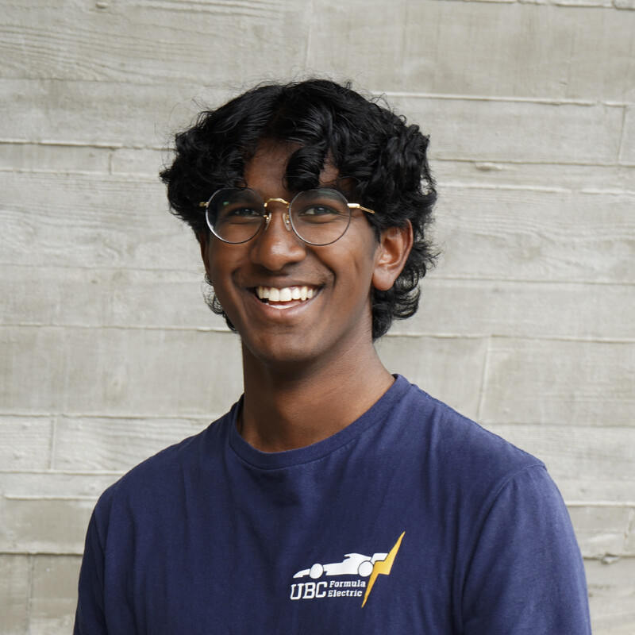

Why I build.
Driven by curiosity, shaped by experimentation. An exploration of what led to engineering, the mindset behind building, and the pursuit of learning beyond the classroom.

How I got here.
I'm drawn to problems that live at the seam between physical systems and the software that models, controls, or communicates about them. That's put me at a particular intersection: a mechanical engineer who actually writes the code, and a software builder who can read a stress plot.
At UBC I'm in the Mechanical Engineering program's Mechatronics/Mechanical Design (BMMD) option, which means coursework spans structures and dynamics on one side and embedded systems and control on the other. I'm also on the co-op stream, so the degree alternates with industry placements — most recently in medical devices.
Outside the classroom, most of my serious engineering hours go into UBC Formula Electric — the university's FSAE electric car program. I started as a suspension and analysis engineer, built tooling the team still uses, and stepped up to Chassis Lead for the 2026 season, owning the full structural package from concept through competition.
My philosophy: precision, traceability, and tools that outlive the person who wrote them. I write documentation because future-me will need it. I build pipelines instead of one-off scripts because the team will grow. I do the math because the part might fail.
Building a race car, seriously.
FSAE is a student engineering competition where teams design, build, and race a formula-style car. UBC's electric entry means high-voltage powertrain, custom chassis, and a full engineering package that gets judged by industry experts.
// chassis lead · 2026
- Structural design of the 4130 chromoly tube frame end to end
- Suspension mounting tube-bending calcs and ANSYS FEA validation
- Torsional-stiffness modeling (Deakin et al.) and impact-attenuator sizing
- Formal design documentation backing every structural decision for judging
- Competition prep and post-competition debrief with prioritized action items
// suspension & analysis · 2025–26
- Python suspension load-analysis pipeline using Pacejka MF5.2 tire model
- Eight design load cases exported directly to ANSYS chassis FEA
- Interactive suspension kinematics web app — live geometry, instant team feedback
- MATLAB/Python lap-sim and g-g diagram tools for setup decisions
- Integrated with the team's data ecosystem so results flow to downstream workflows
What else drives me.
DIY Fabrication
CNC routing, multi-material 3D printing, and custom PCBs. Building the machine that builds the part.
Simulation & Modeling
FEA, kinematics solvers, and tire models. Numbers that predict what metal will actually do.
Tooling & Infrastructure
Analysis pipelines, web apps, and team dashboards — software that multiplies what an engineering team can do.
Electric Vehicles
HV systems, motor control, and the intersection of powertrain and chassis dynamics in FSAE-class EVs.
Embedded Systems
ESP32, FluidNC, and custom firmware. Bridging real hardware to the digital systems that run it.
Technical Writing
LaTeX design docs, structured analyses, and documentation that outlives the person who wrote it.
hello@example.com
Open to co-op and project collaboration at the mechanical–software boundary.